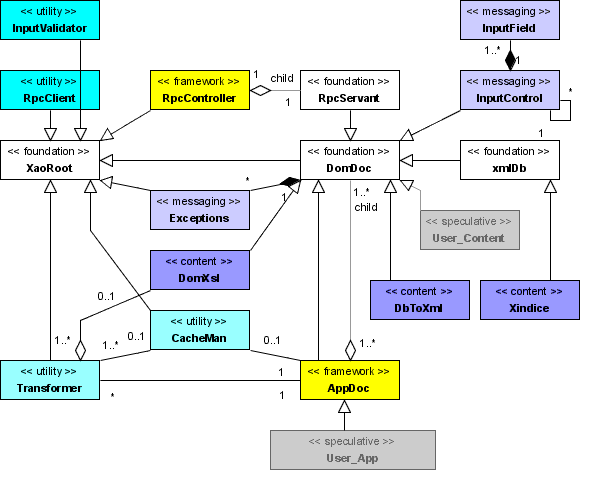

XML Application Objects - API
Welcome to the API references documentation generated from the source code. The
XAO library is still a work in progress and this reference documentation
reflects that. Still, it will help early adopters to get up-to-speed with
rapid development of scalable standards-based web applications.
official website. This is where
you will find comprehensive information regarding XAO.
This reference is
designed to accompany the tutorials which are supplied with the full XAO
library download. Tutorials cannot be hosted on SourceForge since they do not
support the DOMXML extension for PHP.
UML class diagram (a visual map)
This should help you find your way around the classes in this library. Lines
indicate various relationships between classes. The big triangular arrow heads
indicate inheritance and point from the child class to the parent class. The
diamonds indicate an aggregate association. Meaning the object with at the
diamond end will aggregate instances of the other class. The names shown in
angled quotes are stereotypes.
Please note that there are classes shown on the diagram which are not part of the
1.0 distribution. All 1.0 classes are listed to the left.
The speculative stereotypes in the diagram indicate generally where your
class will typically fit into the scheme of things. Typically, your classes
will be based on content, and so you will inherit classes which are children or
DomDoc, or you will inherit DomDoc directly. As you can see, it is safe to
ignore most of the classes here. You really only need know DomDoc and AppDoc to
use XAO effectively. Consult the bundled tutorials for guidance.

|